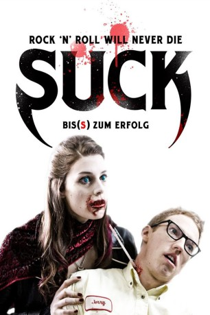

#2576 Suck - Bis(s) zum Erfolg
 
 IMDB-Wertung: 6.1 / 10
IMDB-Wertung: 6.1 / 10  Metascore: 0
Metascore: 0 
Die Rockband „The Winners” tourt durch Amerika und versucht erfolglos, einen Plattenvertrag zu bekommen. Doch als eines Morgens Bassistin Jennifer zum Tourbus kommt, ist alles anders. Sie wird von einer mysteriösen, erfolgversprechenden Aura umgeben, mit der der Erfolg als Band schnell kommt. Genauso schnell kommt aber auch die Gewissheit, dass Jennifer ein Vampir geworden ist. Doch die Vampir-Nummer ist gut für die Band: Einer nach dem anderen wird zum Blutsauger und sie bekommen einen Plattenvertrag. Sie haben nun alles was, sie wollten, ausverkaufte Hallen und Groupies, die ihren letzten Tropfen Blut für ihre Idole geben. Aber mit dem Erfolg kommt ihnen auch Vampirjäger Van Helsing auf die Spur, und der findet Blutsauger gar nicht cool!
Jahr: 2009
Dauer: 91 Minuten
FSK: 16
Land: Kanada Studio: Splendid FilmTonspuren: DTS - ,
Untertitel: Deutsch,
Auflösung: 1080p (1920x1040) Größe: 4915 MB
Genre: Horror, Musik, Komödie
Regisseur: Rob Stefaniuk
Drehbuch: Rob Stefaniuk
Soundtrack: John Kastner, Chris Phillips, Mathias Schneeberger
Darsteller:
 Jessica Paré als Jennifer
Jessica Paré als Jennifer Paul Anthony als Tyler
Paul Anthony als Tyler Alice Cooper als Bartender
Alice Cooper als Bartender- Moby als Beef
 Henry Rollins als Rockin' Roger
Henry Rollins als Rockin' Roger Iggy Pop als Victor
Iggy Pop als Victor Dave Foley als Jeff
Dave Foley als Jeff Malcolm McDowell als Eddie Van Helsing
Malcolm McDowell als Eddie Van Helsing- Barbara Mamabolo als Danielle
- Nicole de Boer als Susan
- Calico Cooper als Barmaid
- Danny Smith als Jerry
- Adam Kenneth Wilson als Vamp
 Joe Pingue als Bouncer
Joe Pingue als Bouncer- Rob Stefaniuk als Joey
- Mike Lobel als Sam
- Chris Ratz als Hugo
- Dimitri Coats als Queeny
- Alex Lifeson als Border Guard
- Carole Pope als Club Bouncer
- Anand Rajaram als Pill Popper
- Chris Barry als Toronto Club Sound Man
- Rico Scuotto als Bouncer 1
- Janson Aslin als Bouncer 2
- Thalia Stefaniuk als Diner Patron
- Caleigh Barker als Diner Patron
Datei: X:\2009(N-Z)\Suck - Bis(s) zum Erfolg (2009, FSK16, 1920x1040).mkv seit 24.11.2015
Festplatte: HD 2009(G-Z)-2010(A-F)
 Es gibt insgesamt 99 Filme in der Gruppe '2009(N-Z)'
Es gibt insgesamt 99 Filme in der Gruppe '2009(N-Z)'